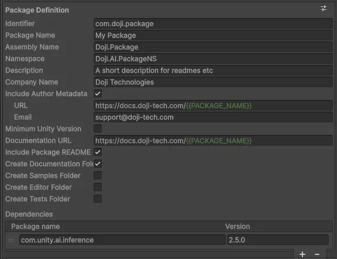
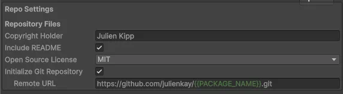
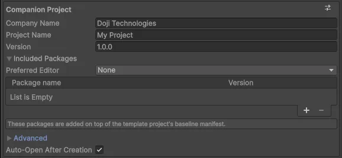
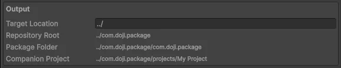
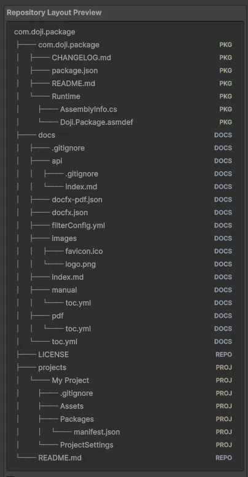

Package Creation Wizard Settings
Package Definition

Package identity, generated package structure, and package-level metadata.
Identifier
The package identifier becomes the generated package.json name value. It also becomes:
- the repository root folder name
- the package folder name inside the repository
- the local package reference used by the companion project
Use a UPM-style identifier such as com.company.package.
Package Name
This is the user-facing display name written to package.json as displayName.
It is what users see in package metadata, not the filesystem package folder name.
Assembly Name
This value drives the generated asmdef names for the package runtime assembly and the optional editor and sample assemblies.
Examples:
Runtime/<Assembly Name>.asmdefEditor/<Assembly Name>.Editor.asmdefSamples~/<Assembly Name>.asmdef
Choose a stable assembly name early. Renaming it later is a broader code migration.
Namespace
This is the root namespace used by generated source and tokenized templates.
It is also used by the DocFX filter template through the {{NAMESPACE_NAME}} and {{NAMESPACE_NAME_REGEX}} tokens.
Description
The short package description is written into:
package.json- tokenized templates such as generated docs landing pages and readmes
Keep it short enough to work well in manifest metadata.
Company Name
This package-facing company value is written into generated package metadata, especially the package manifest author block when author metadata is enabled.
This field is separate from the companion project's company name.
Include Author Metadata
When enabled, the generated package.json includes an author object.
When disabled:
- the nested
URLfield is hidden - the nested
Emailfield is hidden - no
authormetadata is written
URL
This optional field appears only when Include Author Metadata is enabled.
It is written into package.json as the author URL. The field supports the standard package-authoring template tokens.
This optional field appears only when Include Author Metadata is enabled.
It is written into package.json as the author email address.
Minimum Unity Version
When enabled, the package manifest includes Unity version gating fields.
When disabled:
- the nested
Major,Minor, andReleasefields are hidden - no minimum Unity version fields are written
Major
The Unity major version written to the unity field in package.json when minimum Unity version support is enabled.
Minor
The Unity minor version written to the unity field in package.json when minimum Unity version support is enabled.
The manifest combines Major and Minor as <major>.<minor>.
Release
An optional Unity release suffix written to package.json as unityRelease when minimum Unity version support is enabled.
Leave this empty by default.
Only needed when the package manifest must target a specific Unity release suffix such as 0f1 or 1f1.
Documentation URL
This optional value is written to package.json as documentationUrl.
The field supports the standard package-authoring template tokens, so it can be built from the current package, repository, or project values.
Leave it empty if you do not want a documentation URL in the manifest.
Include Package README
When enabled, the wizard writes README.md inside the package root using the package README template.
When disabled, the package still gets package.json and CHANGELOG.md, but no package-level readme is generated.
Create Documentation Folder
When enabled, the wizard creates a repository-level docs/ scaffold that includes:
docs/docfx.jsondocs/docfx-pdf.jsondocs/filterConfig.ymldocs/index.mddocs/api/index.mddocs/toc.ymldocs/manual/toc.ymldocs/pdf/toc.ymldocs/api/.gitignoredocs/.gitignore- optional branding images under
docs/images/
When disabled, no docs/ folder is created.
Create Samples Folder
When enabled, the package gets:
Samples~/00-SharedSampleAssets/Samples~/01-BasicSample/Samples~/01-BasicSample/BasicSample.csSamples~/<Assembly Name>.asmdef
The generated package.json also receives a samples block that points at the sample folders.
When disabled, no Samples~ folder or samples manifest entry is created.
Create Editor Folder
When enabled, the package gets an Editor/ folder plus an editor-only asmdef named <Assembly Name>.Editor.asmdef.
Intended for editor tooling that should live inside the generated package.
Create Tests Folder
When enabled, the package gets a Tests/ folder.
This also changes the companion project manifest: the package is added to the generated project's testables list so the package tests can run from the companion project.
Dependencies
This list writes package dependencies into the generated package.json.
The dependency editor supports:
- add, remove, and reorder operations
- package-name autocomplete backed by the shared package search cache
- direct version entry
Each row contains:
Package name: expected to be lowercaseVersion: expected to follow SemVer, such as1.0.0-preview.1
If the current package name does not yet match a known exact package, the row can expand to show suggestions.
Repo Settings

Repository-root files and repository initialization behavior outside the package folder itself.
Copyright Holder
This value is used by generated repository-level copyright and license content.
If you generate an SPDX license template, it becomes the copyright holder in that file.
Include README
When enabled, the wizard creates a repository root README.md using the repository README template.
This is separate from the package README toggle in Package Definition.
Create 'Sign UPM package' GitHub workflow
When enabled, the wizard creates .github/workflows/ci.yml to handle tag pushes. This small caller passes the generated package folder to the shared signing and release workflow at julienkay/tools.doji.package-authoring/.github/workflows/sign-upm-package.yml@master.
Make these GitHub Actions secrets available to the generated repository:
UPM_SERVICE_ACCOUNT_KEY_IDUPM_SERVICE_ACCOUNT_KEY_SECRETUPM_ORG_ID
The caller grants contents: write and forwards these secrets explicitly. The shared workflow signs the package, verifies its archive, and attaches it to the GitHub Release for the tag.
Each repository still needs the small caller file. The signing implementation is maintained centrally, so changes on master apply to future runs without copying updated steps into every package repository. To freeze the implementation, replace @master in the generated uses reference with a commit SHA or a release tag that contains the shared workflow.
When disabled, no release workflow is generated.
Open Source License
This controls the generated LICENSE file at the repository root.
The available values are:
None: no license file is generatedCustom: uses the editable custom license templateMITApache-2.0BSD-3-Clause
Initialize Git Repository
When enabled, the wizard runs repository initialization after the files are written.
That process creates the git repository in the generated root and creates the initial commit.
When disabled:
- no git repository is initialized
- the nested
Remote URLfield is hidden
Remote URL
This optional field appears only when Initialize Git Repository is enabled.
If provided, it is resolved through the standard template-token system and then assigned to the generated repository's origin remote.
Companion Project
The Companion Project section uses the shared project settings UI, but inside the package creation wizard it intentionally hides the target location field because the companion project always lives inside the generated repository.

Unity project settings for the generated companion project used for development, validation, and sample usage.
Company Name
This company value is written into the generated Unity project's settings.
It is also available to tokenized templates as the project company value.
Project Name
This determines the companion project folder name under projects/.
It is also used as the generated Unity product name.
Version
This single version value is reused across the generated output:
- the package manifest version
- the generated Unity project version
- tokenized templates that reference package version
Included Packages
This foldout controls package additions for the generated companion project manifest.
When expanded, it contains:
Preferred Editor- the
Included Packageslist - a reminder that these packages are added on top of the template project's baseline manifest
Collapsed state only hides the fields. It does not disable previously set values.
Preferred Editor
This selects which Unity IDE integration package is added to the generated project manifest.
The choices are:
NoneVisual StudioVisual Studio CodeRider
The generated project manifest removes any preexisting IDE packages from the baseline manifest and adds the selected one back.
Included Packages List
These entries are merged into the generated companion project manifest after the baseline manifest and preferred editor dependency are applied.
Adds packages beyond the template project's baseline setup.
Advanced
This foldout groups lower-frequency project options.
Collapsed state hides the contained fields but preserves their values.
Generate AGENTS.md
When enabled, the wizard writes a repository root AGENTS.md file using the repository AGENTS template.
When disabled, no AGENTS.md file is created.
Auto-Open After Creation
This toggle sits at the bottom of the companion-project section.
When enabled, the wizard attempts to open the generated companion project in the current Unity editor after generation completes.
When disabled, the files are still generated, but the wizard does not launch the project.
Output
The Output section is read-only except for Target Location.

It shows:
Target LocationRepository RootPackage FolderCompanion Project
Target Location is the base output folder. The final repository root is computed as:
<Target Location>/<Identifier>
The package folder is then:
<Target Location>/<Identifier>/<Identifier>
The companion project folder is:
<Target Location>/<Identifier>/projects/<Project Name>
Repository Layout Preview
The live repository layout preview is not just decoration. It reflects the current toggle state and helps confirm which files and folders each setting will add or remove.

Hovering related fields in the form highlights the matching area of the preview, including package metadata, docs, readmes, samples, editor files, tests, and companion-project output.